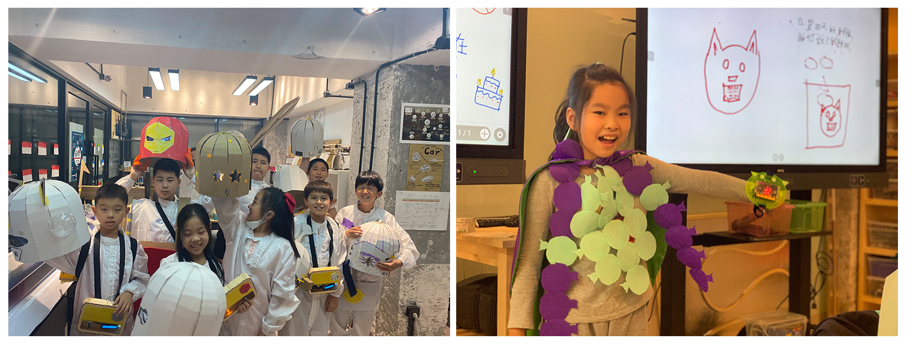
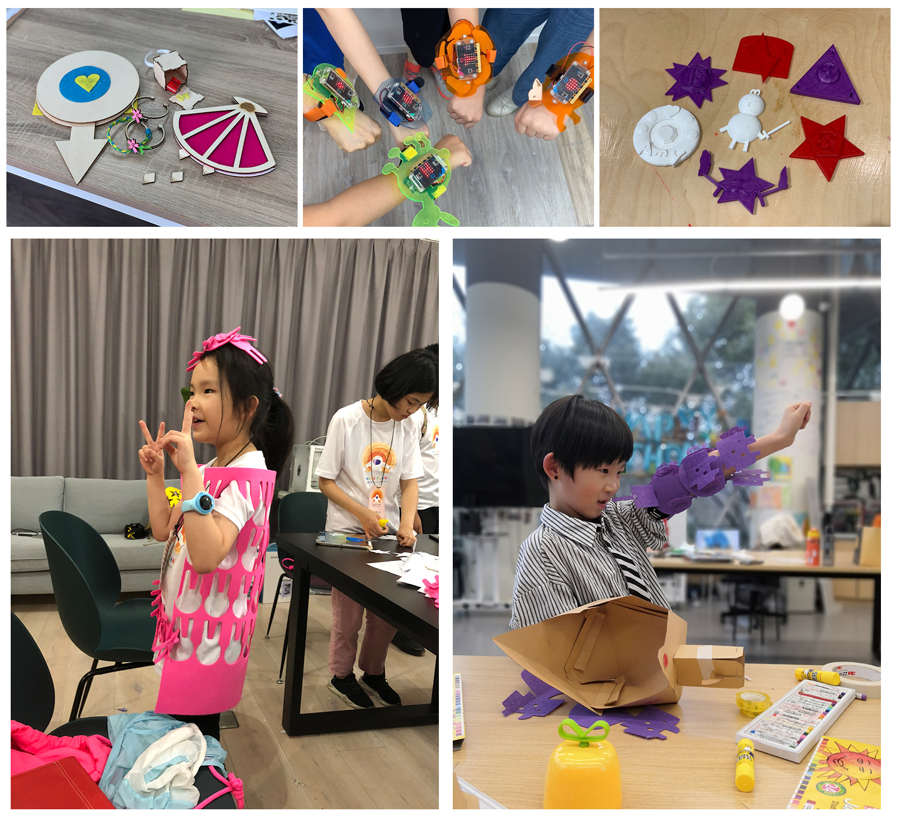
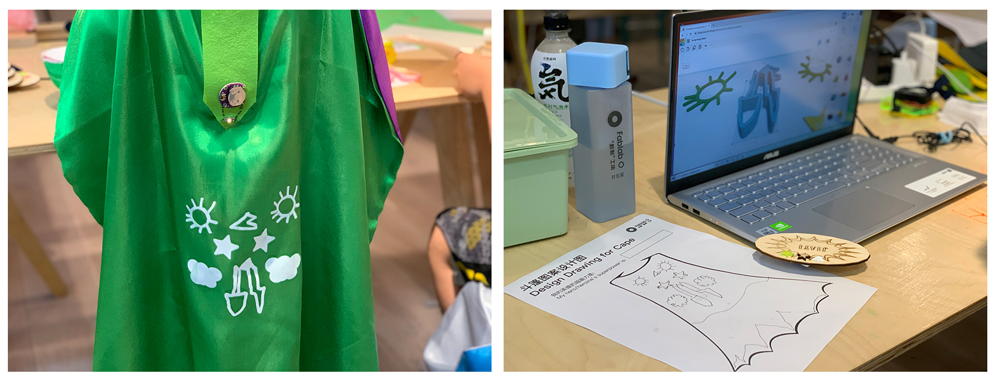
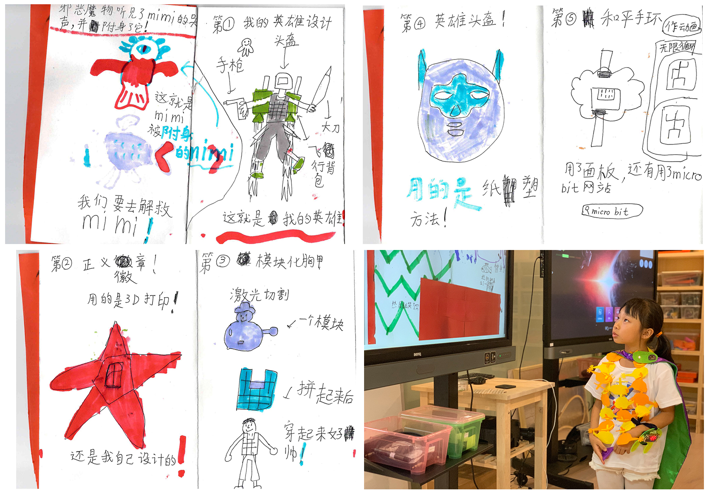
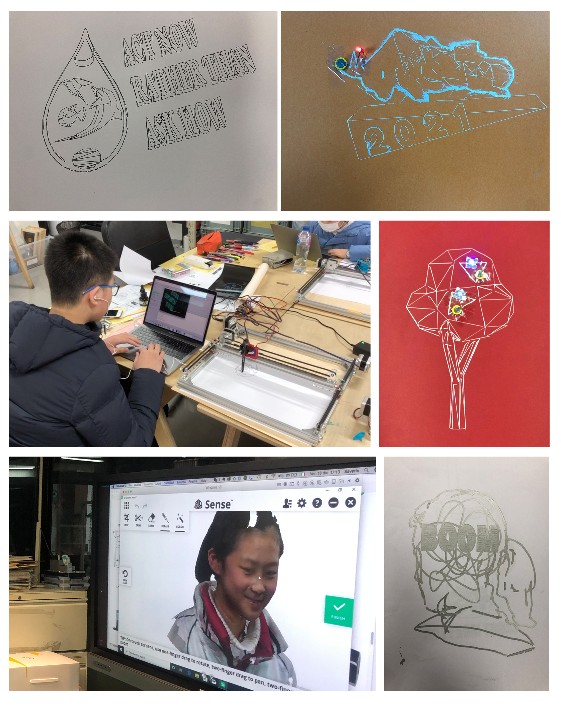

✺ siyu
♦ Educational Research and Practice @ Tongji Fab Lab O
I am an assisting research fellow at Fab Lab O, Tongji University (School of Design and Innovation), with a focus on STEAM education and digital fabrication educational research and design in the Chinese context. I have been working on establishing and facilitating various K-12 and university-level courses in topics such as wearable design, machine-making, design thinking and project development.
♦ role: developer and facilitator
Wearable Design: Introduction to Digital Fabrication
Since 2019, I have been developing and teaching 30-hour introduction to digital fabrication and project development classes for primary school students based on the topic of wearable design. This topic has been contextualized into subjects such as becoming a superhero or superheroine, character design for citizens in space. The class has been divided into five to six projects. I set up each project in an ongoing narrative that is related to the subject. For example, I would come up with a superhero storyline, with design challenges provided at each chapter of the story.
♦ role: co-developer and facilitator
Machine-making
This class is based on the machine design class at Fab Academy, which students (many with no prior knowledge in engineering) are assigned to design and build a machine in two weeks. The making of a X-Y axis plotter (e.g a laser cutter, a CNC machine) is not very difficult. This class takes the idea of teaching machine-making to beginners, and is designed as an intensive course for students ranging from middle schoolers to adults.
The focus of this machine-making class is making a drawing machine that "writes" a message to Earth. The engineering aspect of the course was facilited by Saverio. I focused on the artistic aspect. Instead of establishing a vertical relationship between human and machine, I intend to encourage student to think about human and machine as collaborators. Digital fabrication techniques such as laser cutting and 3d printing were introduced to make customized components for the machine. Rhinoceros was introduced not only as a CAD software for making accurate 2D and 3D design of machine components, but also a 2D and 3D digital canvas that can be used for exporting drawing path for the machine to draw.
♦ role: co-developer and facilitator
Design Thinking and Project Development
This is an eight-week course at university-level in rapid prototyping and project development. The class is designed around the structure of design thinking (DT) methodology, each DT phase being one-to-two weeks of the class. Digital fabrication techniques (laser cutting and 3D printing), programming (Arduino) and computer-aided design (Rhinoceros) were taught in accordance with the design thinking phase. For example, design and fabricat a prop for making an interview, embed input and output device into a fast prototype of a brainstorm idea.
Class Site: LINK